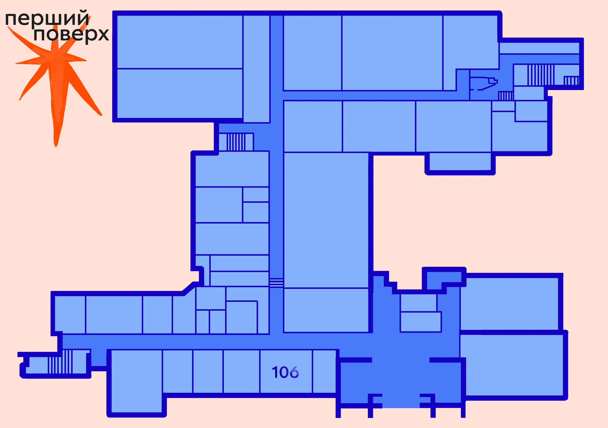
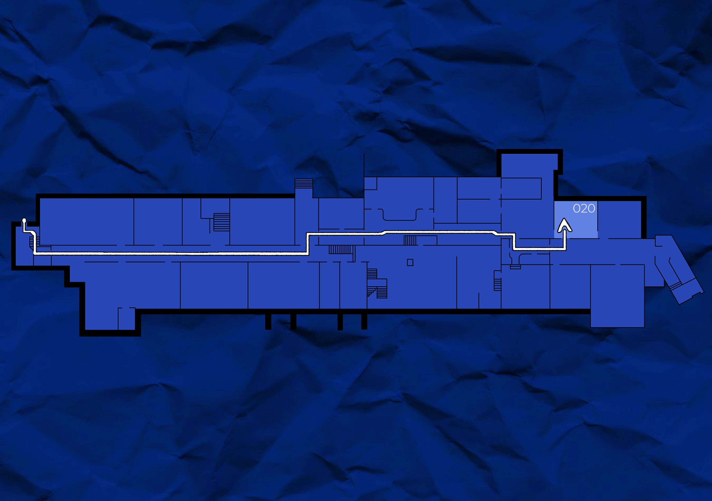
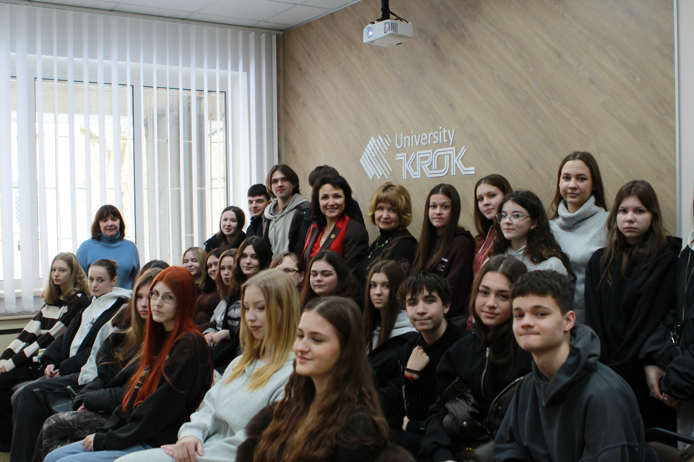
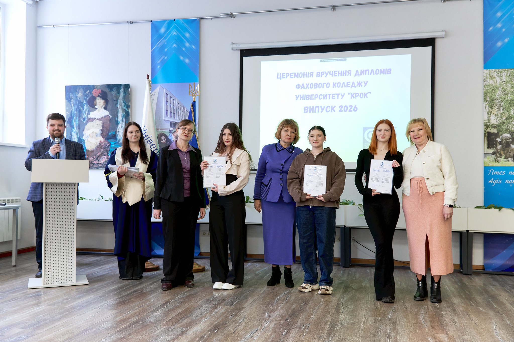
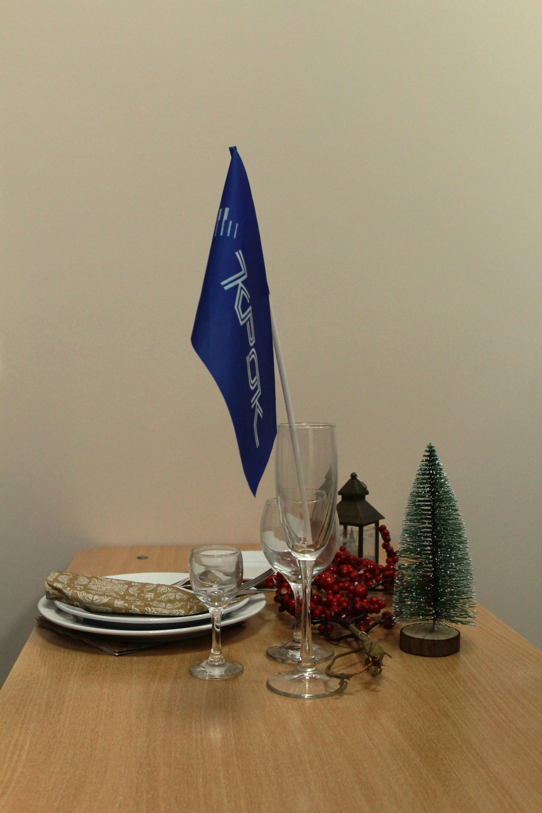
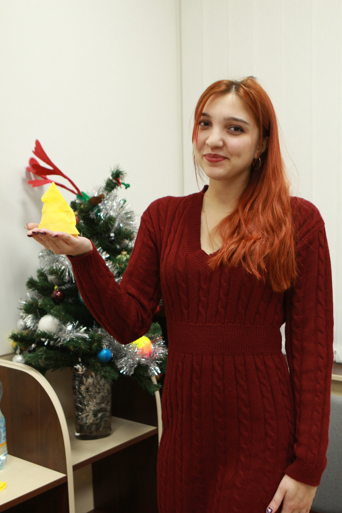
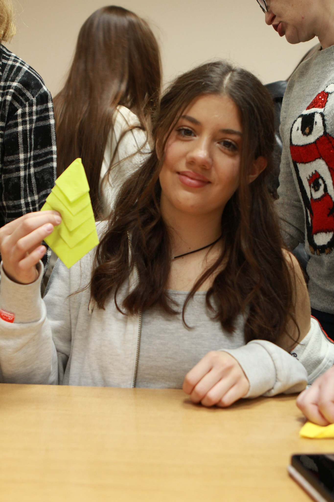
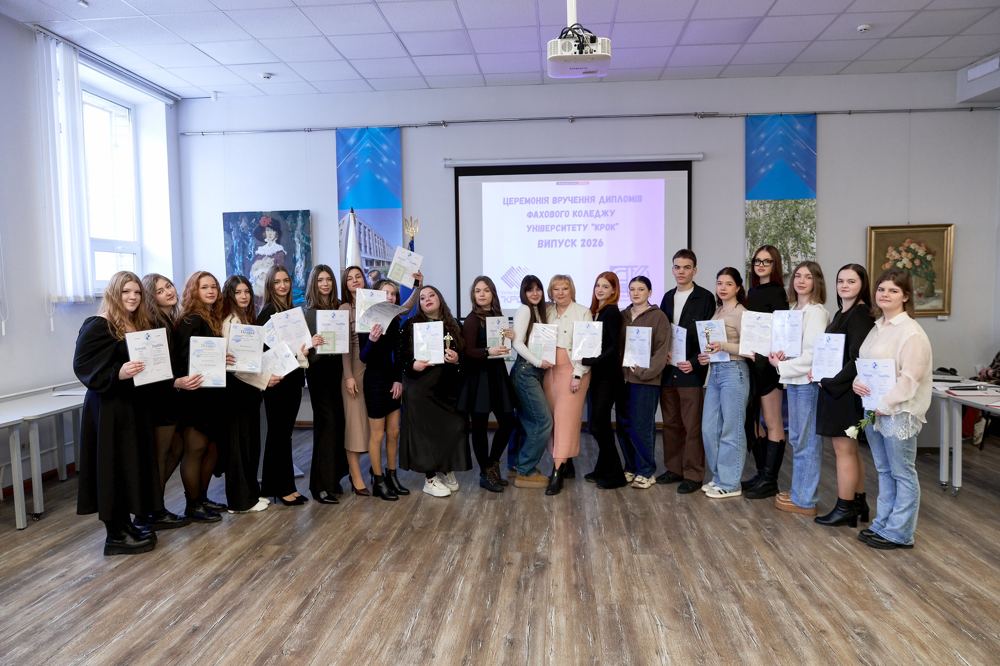

Сучасні тренди індустрії гостинності
Знайти потрібні аудиторії та локації за допомогою карти приміщення. Гортайте, аби ознайомитися з картами першого поверху і підвалу.


Коротко про те, для кого ця локація буде найцікавішою та чим вона може бути корисною.
Експерти, викладачі та практики, які поділяться досвідом, розкажуть про навчання, кар’єрні можливості та особливості освітніх програм.
Ознайомтеся з освітніми програмами та знайдіть напрям, який найбільше відповідає вашим інтересам, цілям і майбутній професії.
Тут про атмосферу попередніх заходів, активності учасників і те, як проходила локація в минулі роки.





